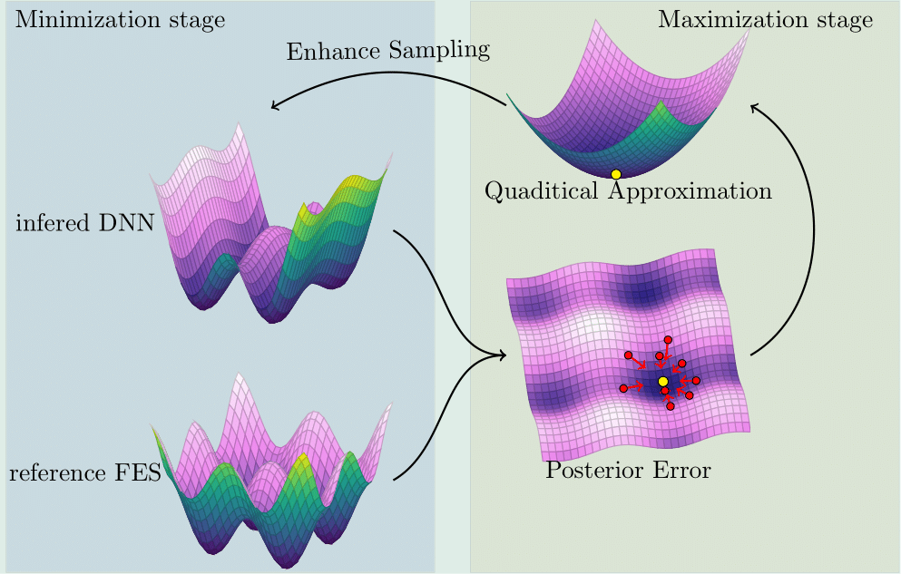
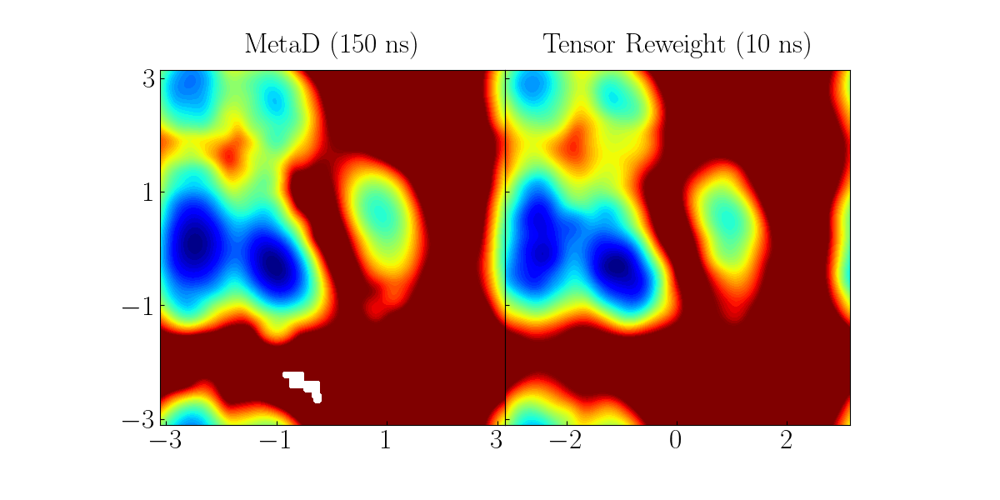
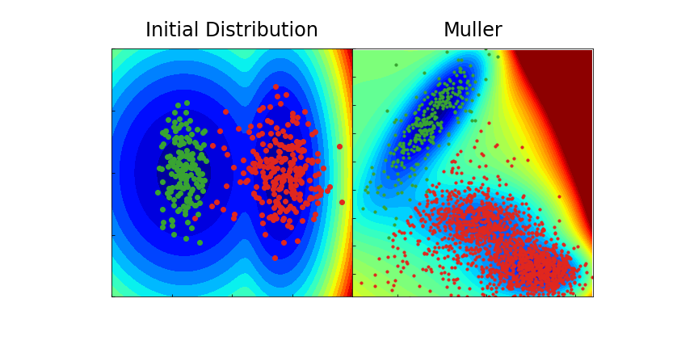
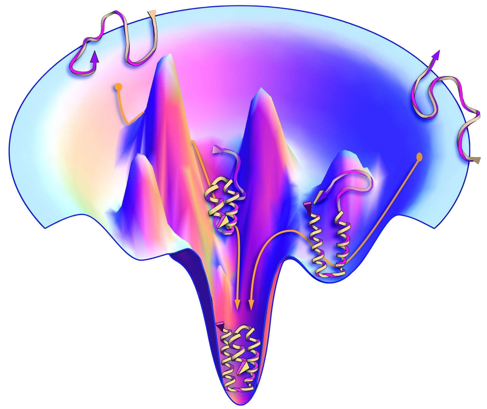
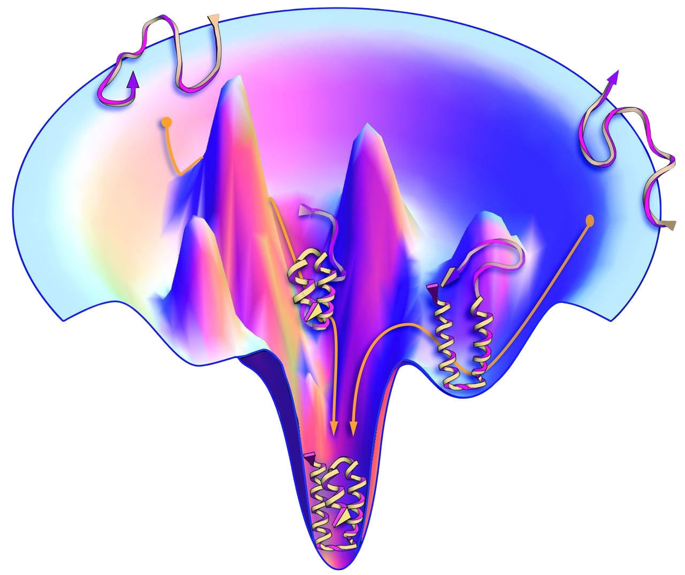

Predicting
non-equilibrium
processe, i.e. evolution under an external force field \(V_{\text{ext}}(\bq)\).
For a given configuration \(\bm {Q}\), theoretically:
\[
\mb K(\bm {Q}, t) = \mathcal{P}_{\mb Z}[({\rm e}^{\mathcal{Q}_{\bm Z} \mathcal{L} t}\mathcal{Q}_{\bm Z} \mathcal{L}\mb P) (\mathcal{Q}_{\bm Z} \mathcal{L}\mb P)^T],
\]
where the projection operator:
\(
\mathcal{P}_{\bm Z} f(\mb z) := \mathbb{E}[f(\mb z) \vert \phi(\mb z) = \bm Z ].
\)
The Kernel depends on the marginal distribution
\[
\rho_{V_{\text{ext}}}(\bz|\bZ) = \frac{1}{Z} \delta(\phi(\bz)-\bZ) \rho_{V_{\text{ext}}}(\bz)
\]
The Time dependent projection result in \(K(\bQ,t,s)\)
\[
\dot{\mathbf{P}}(t) =
-F(\mathbf{Q})
- \int_0^t {\mathbf{K}(\mathbf{Q}(s), t,s) }\mathbf{V}(s) ds
+ \mathbf{R}(t).
\]
Hermann Grabert.
Projection Operator Techniques in Nonequilibrium Statistical Mechanics.
Springer Tracts in Modern Physics, 1982.
Extension to Nonequilibrium
Predicting
non-equilibrium
processe, i.e. evolution under an external force field \(V_{\text{ext}}(\bq)\).
For a given configuration \(\bm {Q}\), theoretically:
\[
\mb K(\bm {Q}, t) = \mathcal{P}_{\mb Z}[({\rm e}^{\mathcal{Q}_{\bm Z} \mathcal{L} t}\mathcal{Q}_{\bm Z} \mathcal{L}\mb P) (\mathcal{Q}_{\bm Z} \mathcal{L}\mb P)^T],
\]
where the projection operator:
\(
\mathcal{P}_{\bm Z} f(\mb z) := \mathbb{E}[f(\mb z) \vert \phi(\mb z) = \bm Z ].
\)
Increase the dimension of Coarse grained variables to make the marginal distribution closer
\[
\rho_{V_{\text{ext}}}(\bz|\bZ) = \frac{1}{Z_{\text{ext}}} \delta(\phi(\bz)-\bZ) \rho_{V_{\text{ext}}}(\bz) \approx
\frac{1}{Z_0} \delta(\phi(\bz)-\bZ) \rho_{0}(\bz) = \rho_{0}(\bz|\bZ)
\]
The resultant model can be generalized to other external force fields.
\[
\dot{\mathbf{P}}(t) =
-F(\mathbf{Q})
- \int_0^t {\mathbf{K}(\mathbf{Q}(s), t-s) }\mathbf{V}(s) ds
+ \mathbf{R}(t).
\]
Numerical Result:reverse Poiseuille flow
Numerical Result:Vortex flow
Summary
The proposed Non-Markovian Manybody model employs neural networks to encode many-body interactions and learnable parameters to capture non-Markovian memory.
Symmetry Enforcement: The neural network architecture explicitly respects translation invariance, rotation symmetry, and permutation symmetries, ensuring physically consistent dynamics.
Thermodynamic Consistency: The model integrates neural networks into the Mori-Zwanzig framework, enabling accurate simulations while retaining thermodynamic consistency.
Free Energy Surface
\(\bq\): positions of the atoms in a protein
\(U(\bq)\): potential of the micro-scale coordinates \(\br\)
Dill, Ken A., and Justin L. MacCallum.
The protein-folding problem, 50 years on.
science, 2012.
How to construct Free Energy Surface?
Main Challenges
The Prevalence of Energy Barriers
Explore the phase space by overcoming energy barriers
Existing Method: Umbrella sampling, Histogram reweighting, Metadynamics, Variational enhanced sampling, Temperature-accelerated molecular dynamics
and Adiabatic free energy dynamics.
The High Dimensionality
Exploite the posterior error to adaptively optimize the sampling ponits.
Recent Attempts: Reinforce dynamics (Zhang-Wang-E, 2018) and Hyperactive learning (Oord-Sachs-Kovács-Ortner-Csányi, 2023) implicitly infer the posterior error with uncertainty indicator of multiple surrogate models
Motivation: free energy construction enabling both efficient exploration of the phase space and explicit exploitation of posterior-enhanced sampling
A minmax reformulation
Problem setup:
Seek a parameterized FES \(A_{\mathcal N}(\bQ)\) to approximate the true FES \(A(\bQ)\)
\[
\MLMN(\bQ) = \|-\nabla_\bQ A_{\mathcal N}(\bQ) - \bF(\bQ)\| \text{ for } \bz \in \Gamma
\]
\(
\bF(\bQ) = - \nabla U(\bQ)
\):mean force calculated from the restrained molecular dynamics
Consider the weighted loss with respect to a probability density function on \(f(\bQ)\) on \(\Gamma\):
\[
(\MLMN, f) = \int_\Gamma \MLMN(\bQ) f(\bQ) \intd\bQ
\]
Proposition:
Assume there exists a solution \(\MLMN(\bQ) \equiv 0 \), then \(A_\mathcal{N}(\bQ)\) is a solution if and only if it solves the minimax problem
\[
\min_\mathcal{N} \max_f \int \left( \MLMN(\bQ),f(\bz) \right)
\]
A minmax reformulation
Main idea: Reformulation the direct construction of \(A(\bQ)\) by alternatively
optimizing the sampling distribution \(f(\bQ)\) and the surrogate representation \(A_\mathcal{N}(\bQ)\)
Maximum problem : optimize the sampling
distribution \(f(\bQ)\)
based on the posterior error
of the present NN approximation
\(A_{\mathcal N}(\bQ)\)
Minimization problem :
optimize the NN approximation given the updated \(A_{\mathcal N}(\bQ)\) training sample points

Iteratively solving Min and Max problems yields the constructed free energy surface
where \(G(\bQ;\mbm,V) = \frac{1}{2} (\bQ-\mbm)^T V^{-1}(\bQ-\mbm)\)
If G is given, we can sample from \(\tilde{f}(\bQ)\) by solving the following SDE
\[
\intd \bQ^i_t = - \frac{1}{\gamma}\nabla_\bQ G(\bQ^i_t) \intd t + \sqrt{\frac{2}{\kappa_h\gamma}} \intd \mathbf W_i(t)
\]
Since G is unknown, we should sample from \(\tilde{f}(\bQ)\) by solving the following Mckean SDE
\[
\intd \bQ^i_t = - \frac{1}{\gamma}\nabla_\bQ G(\bQ^i_t;\mbm_t ,V_t)\intd t + \sqrt{\frac{2}{\kappa_h\gamma}} \intd \mathbf W_i(t)
\]
Suppose \( \mathcal{L}^- (\mathbf{Q}) \) takes a local quadratic form, by choosing \( \kappa_t = \kappa_l + \kappa_h \) ,
the distribution of Mckean SDE \( f_t \to f^*\) as \( t \to \infty \).
Numerical Result: 1D toy example
Reference solution: \(U(Q) = Q^2 - \cos(2\pi Q)\)
Numerical Result (2D)
Method
Accuracy
Time (h)
\(l_2\) error
\(l_\infty\) error
Simulation
Train
VES
5.39
21.03
47.5
RiD
1.52
9.46
17.98
0.22(GPU)
CES
1.45
6.74
0.23 × 10walkers
0.18(CPU)
0.13(GPU)
Numerical Result (3D)
Method
Time
Simulation
Train
RiD
423
8 (GPU)
CES
4.81× 20walkers
0.84 (GPU)
\(\psi=1.5\)
\(\phi=1.0\)
\(\omega=1.5\)
Numerical Result (30D)
\(\phi_1,\psi_1\)
\(\phi_2,\phi_3\)
\(\psi_2,\psi_3\)
Summary
Consensus enhanced sampling method for constructing free energy surface
Adversarial learning with adaptive sampling based on posterior error
Unified tasks of both exploration of the phase space (high-temperature limit) and posterior enhanced adaptive sampling (low temperature limit)
Generalization for efficient constructing reduced modeling terms (e.g., the state-dependent memory) within high-dimensional phase space
Outlook: Generative Model
In collaboration with Siyu Guo and Huan Lei
Go beyond the quadratic approximation
Functional Hierarchical Tensor to Density Estimation
10 iterations in a 4D space
Limitation:
only suited for medium-dimensional data.

Future Direction:
Using Normalizing flow and diffusion models for higher dimensional case.
Outlook: Extra Important Information
In collaboration with Zhiyuan She and Huan Lei
Instead of mapping from Gaussian distribution
Known Distribution with Metastable state to Unknown Distribution with Metastable
Using the known metastatble state to identify the unknown distribution
Application:
finding the metastable state of the chemical reaction or protein folding

Outlook: Macroscopic Model
In collaboration with Huan Lei
Non Fourier heat conduction
Fourier Law
\[
u_t = \kappa \Delta u
\]
Limitation:
Linear Approximation
Temperature cannot close the dynamics by itself
Reason: High temperature coexist multiple phases: fcc, bcc, hcp
Solution: Steinhardt order parameters as phase variables into dynamics.
Non Fourier Law
\[
\begin{aligned}
u_t &= \left( \nabla\cdot\Gamma[u,v] \nabla \right)\frac{\delta \mathcal{S}[u,v] }{\delta u }\\
v_t &= \left( -\alpha[u,v] +\nabla\cdot\Gamma[u,v] \nabla \right)\frac{\delta \mathcal{S}[u,v] }{\delta v }
\end{aligned}
\]
Outlook: Macroscopic Model
In collaboration with Huan Lei
Non fourier heat conduction
Non Fourier Law
\[
\begin{aligned}
u_t &= \left( \nabla\cdot\Gamma[u,v] \nabla \right)\frac{\delta \mathcal{S}[u,v] }{\delta u }\\
v_t &= \left( -\alpha[u,v] +\nabla\cdot\Gamma[u,v] \nabla \right)\frac{\delta \mathcal{S}[u,v] }{\delta v }
\end{aligned}
\]
 
